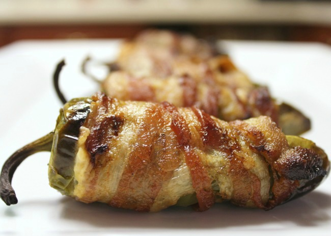

Bacon Wrapped Jalapeno Poppers

Better than the typical poppers
Ingredients
- 1/2 cup cream cheese
- 1/2 cup shredded sharp Cheddar cheese
- 12 jalapeno peppers, halved lenghtwise, seeds and membranes removed
- 12 slices Bacon
Steps
- Preheat oven to 400 degrees F (200 degrees C). Line a baking sheet with aluminum foil.
- Mix cream cheese and Cheddar cheese together in a bowl until evenly blended. Fill each jalapeno half with the cheese mixture. Put halves back together and wrap each stuffed pepper with a slice of bacon. Arrange bacon-wrapped peppers on the prepared baking sheet.
- Bake in the preheated oven until bacon is crispy, about 15 minutes.
- Enjoy!